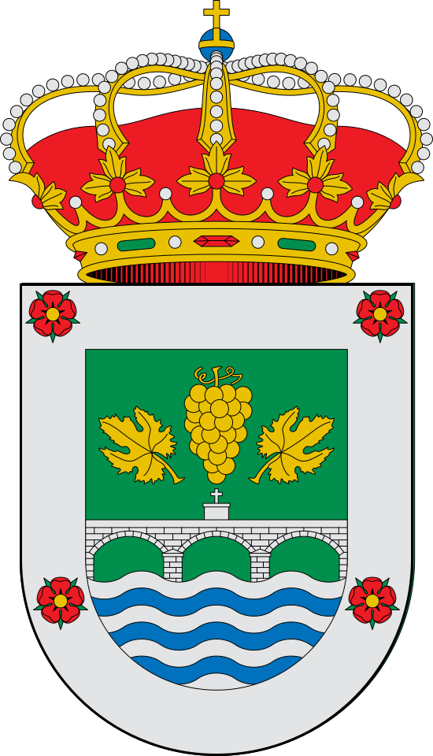

O Rosal
O Rosal é un lugar situado en Galicia o cal é reconocido por os seu viño.

Sitios de ocio
-La Plaza
-Molinos do Folon
-Molinos do Picón
Geografía
Se encuentra a orillas del río Miño, que hace frontera entre España y Portugal, y próximo a su desembocadura. El Rosal también tiene salida al océano Atlántico.
Historia
Se han encontrado vestigios paleolíticos, que incluyen pinturas rupestres, y de la Edad del Bronce. La cultura de los castros estuvo muy presente en esta zona.
Durante la Edad Media perteneció al Monasterio Cisterciense de Santa María la Real de Oya.